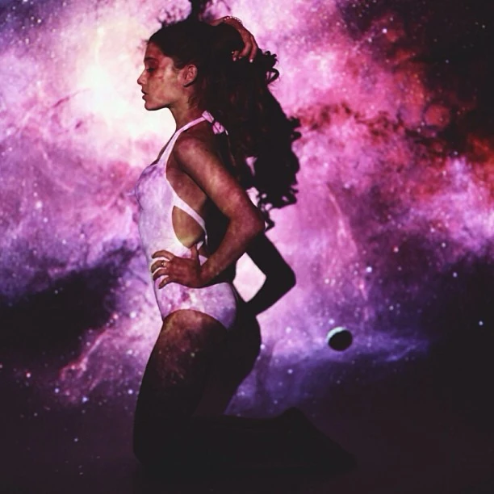
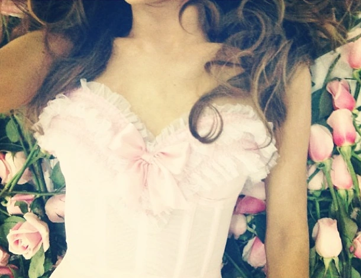
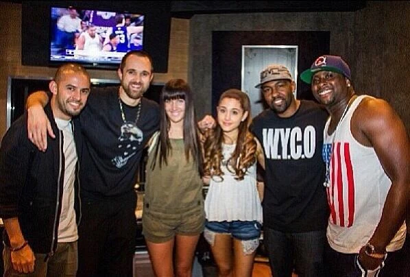
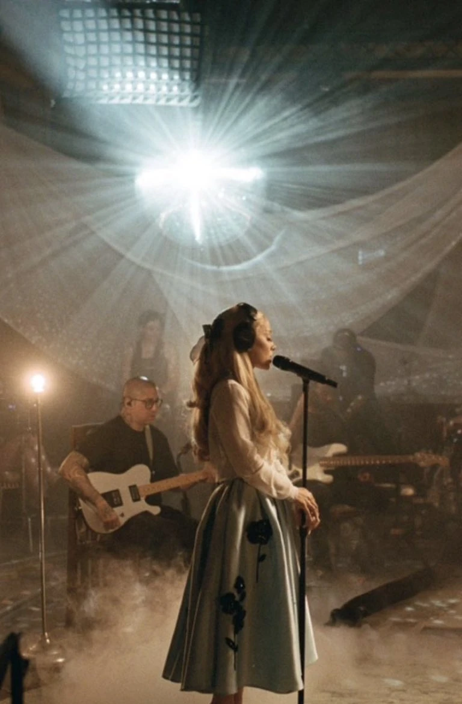

About ⋆ . ˚


Yours Truly is the debut studio album by Ariana Grande. The album was released on September 3, 2013 (August 30, 2013 in some territories) by Republic Records. The album was originally announced as Daydreamin', but the title was ultimately changed before release. This was the album's title up until at least March 19, 2013.
While primarily a pop and R&B record, Yours Truly incorporates the sounds of 1990's hip-hop and 1950s doo-wop. Grande was inspired by several artists throughout the making of Yours Truly, including Amy Winehouse, Christina Aguilera, and Mariah Carey. The album was crafted over the span of nearly three years with various producers, including Harmony Samuel's, Babyface, Patrick "J. Que" Smith, and Victorious co-star, Leon Thomas III of the Rascals, creating a sound that is, in Grande's words, "half-throwback, half-unique."
Yours Truly debuted atop the US Billboard 200 chart, making Grande the fifteenth female artist to ever debut at number-one in the United States with their first album. The album achieved critical acclaim upon release and was later certified platinum by the RIAA.
On August 25, 2023, the album was re-released in celebration of its ten-year anniversary, including newly recorded Live From London versions of numerous songs from the album, Q&As with Grande, brand new Yours Truly inspired merchandise, a re-issued picture disc vinyl including a new embossed gatefold, and unreleased material uploaded to Grande's YouTube Channel.
Background ⋆ . ˚
Taking nearly three years to complete, Yours Truly underwent significant conceptual and sonic changes before its eventual release. Grande started working on music independently while filming Victorious (October 2009-April 2013), and formally started production on the album in 2011 after she was signed to Republic Records. By September 10, 2011, Grande already had 20 songs prepared and was going through the process of narrowing it down to thirteen.

The intended lead single for the album, the bubbly, upbeat "Put Your Hearts Up", was released on December 12, 2011. The single was aimed at younger audiences, perhaps intending to cater to Grande's core audience, which at that time was almost entirely made up by children who knew her as Cat Valentine.
Throughout the creation of the album, Grande described it being "inspired by 50s and 60s doo-wop" and revealed that she was gonna release two new singles before the albums release, including the doo-wop/dubstep hybrid "Do You Love Me?" featuring American rapper and record producer, Sky Blu. Throughout the next couple of years, Grande revealed more songs that were intended for her album, including "Voodoo Love", "La Vie En Rose", "Pink Champagne", and "Boyfriend Material". However, most of these songs went unreleased. "Boyfriend Material" was sold to Korean girl group F(x) and was released in 2013 as "여우 같은 내 친구 (No More)". The song's instrumental and main vocal melody are nearly identical to Ariana's version, but feature completely different lyrics.
"Honeymoon Avenue", "Tattooed Heart", and "Daydreamin'", were all created during these early album sessions as well, though they are the only three songs from the original concept to eventually be released with the rest of the album.
In early 2013, Grande met up with her label and expressed dissatisfaction with the direction the album was taking. In several interviews throughout the year, she admitted to completely disliking her debut single, "Put Your Hearts Up", and confessed she wanted to make the type of music she grew up listening to: "random urban pop, just some 90's music."
The album's original "throwback" concept was then reworked, and the album began to take shape as more of a 1990s hip-hop and R&B infused record. Grande described this new sound as "modern motown inspired pop and soul." Grande later listed Amy Winehouse, Mariah Carey, Whitney Houston, Alicia Keys, and Madonna as inspirations for the album, amongst others. Although the album was originally announced as Daydreamin', Grande had revealed in an interview with Power 106 that it was renamed to Yours Truly after she decided that the album felt like a love letter she wanted to sign.

"The Way", featuring American rapper Mac Miller, was released as the album's new lead single on March 26, 2013. The song peaked at number nine on the US Billboard Hot 100, becoming both Grande and Miller's first top 10 song on the chart. An accompanying music video, directed by Jones Crow, features Grande and Miller dancing inside of a room filled with balloons. It was released two days after the single's initial release. The song samples "Still Not a Prayer" (1998) by Big Pun.
The original album cover for Yours Truly depicts Grande, dawning light-pink lingerie, kneeling over a bed of pink and white roses. She is sitting in front of a coral-pink background, and the words "Yours Truly, Ariana Grande" are written above her in cursive. Grande received backlash from fans over the image, with some claiming it was "too childish" and "ugly". Due to the negative reception, the album cover was swiftly changed to a black and white image of Grande beneath a spotlight.
Promotion & Critical Reception ⋆ . ˚
Grande performed "The Way" at several Top 40 radio concerts, including KIIS-FM's Wango Tango concert on May 11, 2013 in Los Angeles, 101.3 KDWB's Star Party concert on May 17, 2013 in Minneapolis, Kiss 108's Kiss Concert 2013 event in Boston, 103.3 AMP Radio's Birthday Bash concert on June 30, 2013 also in Boston, and Mix 93.3's Red White & Boom concert on July 5, 2013 in Kansas City. Her debut televised performance was on May 29, 2013, where she performed "The Way" live with Mac Miller on The Ellen DeGeneres Show. Her second televised performance of "The Way" aired on Late Night with Jimmy Fallon during the episode dated June 14, 2013.

On August 7, 2013, Grande revealed the official tracklist via iTunes, and pre-orders for the album were made available.
Yours Truly has received positive reviews from critics, with much praise going to her throwback to 90s R&B music and her vocals, with critics comparing them to Mariah Carey.
At Metacritic, which assigns a normalized rating out of 100 to reviews from mainstream critics, the album received an average score of 86, which indicates "universal acclaim", based on 5 reviews. Nick Cattuci of Entertainment Weekly gave the album an A- grade, describing it as "one of the most purely enjoyable albums of the year" and praising Grande's "lithe, Broadway-honed voice." Lucas Villa of Examiner awarded the record four out of five stars, writing, "[Grande's] big and theatrical voice flutters in all the right places on this sugary sweet album of love tunes." Gregory Hicks of The Michigan Daily gave the album a mixed review, saying "most tracks are of quality composition, lyrically and melodically, but beat usage becomes excessive at times."

The Huffington Post gave the album a positive review, calling it one of the year's best album debuts, stating that her album is in "near-perfect form on her debut, mainly thanks to her Mariah Carey-esque vocals and songs written by Kenneth "Babyface" Edmonds." Shamiyah Kelley of the The Daily Reville gave the album a grade "A", stating that "These days, it’s difficult to find a singer that actually has a great voice, but when Grande sings, it takes me back to The Emancipation of Mimi from Mariah Carey's glory days". She concluded her review by saying "there was a lot of anticipation for this album with high expectations, and Grande delivered." The Honesty Hour were mixed with the album, praising “Tattooed Heart,” “Piano,” and “Honeymoon Avenue” as the standout tracks of the album, but felt Grande needed to train more on her vocals. The site gave the album a 3.5 out of 5 stars, stating "as a whole, Ariana’s debut is very solid. It is cohesive, written with understandability, and is sonically-pleasing."
Grande has embarked on her debut tour titled The Listening Sessions in support of Yours Truly. It started on August 13, 2013, and ended on September 22, 2013. The tour is passed through North America only (Canada and United States).
Commercial Performance ⋆ . ˚
On September 4, 2013, Billboard reported that Yours Truly would most likely sell between 110,000 and 120,000 copies in its first week in the United States by the end of September 11, 2013. Yours Truly officially debuted at the top of the US Billboard 200 chart, with 138,000 copies sold in its first week, becoming Grande's first number-one album as a solo artist. This made Grande the fifteenth female artist ever and the first female artist to have their first album debut atop of the charts since January 2010, when Kesha's Animal opened at number one.
Grande's sales were especially strong digitally, as 108,000 of her first-week sales were from digital downloads, while the album sold 30,000 copies through physical sales. In its second week, the album dropped eight places to number nine selling 31,000 more copies, bringing its total sales in the United States to 169,000. As of June 2020, the album has sold 615,000 copies in the United States and was certified platinum by the Recording Industry Association of America (RIAA) on March 22, 2016, for shipments of one million copies. In 2013, Yours Truly was ranked as the 106th most popular album of the year on the Billboard 200. It then went on to become the 68th most popular album on that chart the following year.
10th Anniversary Celebration ⋆ . ˚

Yours Truly (Tenth Anniversary Edition) is a reissue of Yours Truly, released on August 25, 2023, to commemorate the tenth anniversary of the album's original release. Announced on August 19, 2023, via Grande's Instagram, the digital reissue includes live versions of six songs from the album, and was promoted with videos of those live performances as well as Q&As with Grande, a merchandise capsule collection, and a new picture disk pressing of the standard album. The digital reissue contains the original twelve tracks as well as the Spanglish version of "The Way" featuring Mac Miller previously only found on the LatAm version of the album, followed by the six newly recorded "Live from London" performances.
Sources ⋆ . ˚
Navigation Bar - Black & White Flower Image - Source: https://png.pngtree.com/png-vector/20240312/ourmid/pngtree-black-and-white-cute-flower-png-image_11935120.png
About - Yours Truly Official Album Cover Image - Source: https://m.media-amazon.com/images/I/61nIR7pU23L.jpg
About - Yours Truly Japanese Official Album Cover Image - Source: https://images-na.ssl-images-amazon.com/images/I/81-EIBpsVgL._SL1500_.jpg
About - Yours Truly Japanese Official Album Deluxe Cover Image - Source: https://i.pinimg.com/736x/34/36/a4/3436a462f38a3fc785358e5e70d4cba7.jpg
About - Yours Truly 10th Anniversary Album Cover Image - Source: https://is1-ssl.mzstatic.com/image/thumb/Music116/v4/3c/1a/56/3c1a56d0-a5a2-f075-df0e-abe03d863a40/23UMGIM99780.rgb.jpg/1200x1200bf-60.jpg
About - Yours Truly Scrapped Album Cover Image - Source: https://tse1.mm.bing.net/th/id/OIP.XhmJgG3xMh8JnsQ4BOn9iAHaHh?r=0&rs=1&pid=ImgDetMain&o=7&rm=3
Background - Yours Truly Galatic Photo Shoot Image - Source: https://arianagrande.fandom.com/wiki/Yours_Truly?file=Ariaanagalaxy.jpg
Background - Yours Truly Original Cover Outfit Image - Source: https://arianagrande.fandom.com/wiki/Yours_Truly?file=Ariana_Yours_Truly_Cover_Outfit.png
Promotion and Critical Reception - Ariana With a Group of People Image - Source: https://arianagrande.fandom.com/wiki/Yours_Truly?file=IMG_5569.jpeg
Promotion and Critical Reception - Ariana performing in The Listening Sessions Image - Source: https://thepacepress.org/wp-content/uploads/2013/08/ariana.jpg
10th Anniversary Edition - BTS of the 10th Anniversary Live Performance for Yours Truly Image - Source: https://arianagrande.fandom.com/wiki/Yours_Truly?file=Yt10_bts_4.jpg
font "Karrilee" obtained from svg icons is licensed by CC BY 4.0
ALL OF THE WRITTEN MATERIAL ABOVE WERE COMPLETELY SOURCED AND TAKEN FROM THE OFFICIAL ARIANA GRANDE FANDOM WITH MINOR MODIFICATIONS. THE LINK TO THE WIKI IS HERE: https://arianagrande.fandom.com/wiki/Ariana_Grande